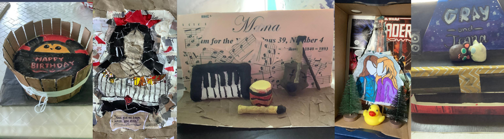
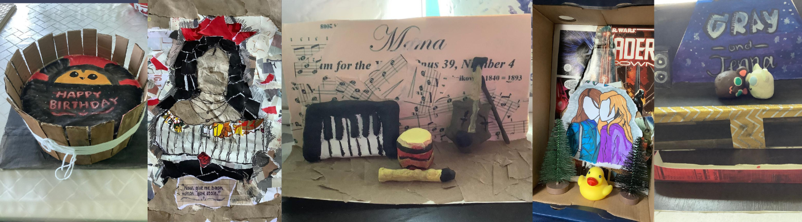
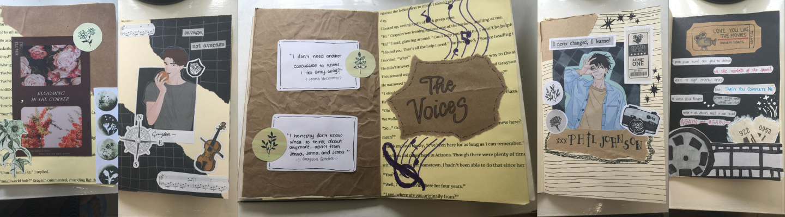

While Cami's strong points are drawing and painting, she's also attempted to create art using other media such as cardboard, clay, and scrap materials, coming up with dioramas, sculptures, and collages.
With plenty of scrap papers laying around and a vision, she decides to put these together, creating a scrapbook with different themes.